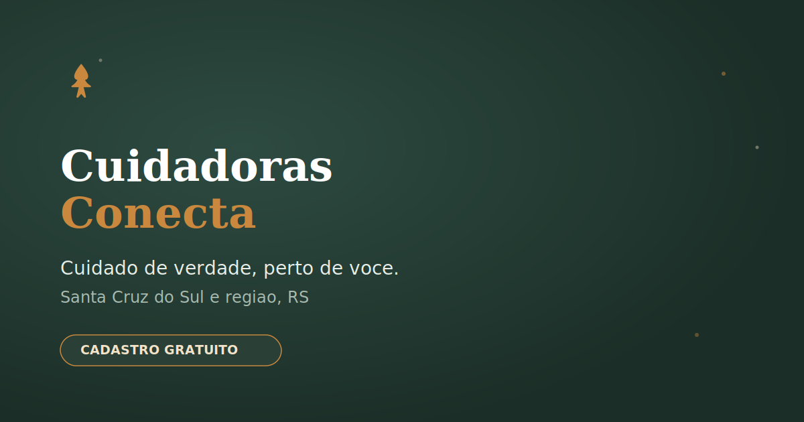

Estúdio digital · Vale do Rio Pardo
Produtos digitais construídos a partir do problema real.
A Yandu une estratégia, UX, design e desenvolvimento para transformar ideias e processos em sites, plataformas e automações que funcionam.
A Yandu une estratégia, UX, design e desenvolvimento para transformar ideias e processos em sites, plataformas e automações que funcionam.
Nenhum produto nasce pronto. Antes de virar site, plataforma ou automação, toda ideia passa pelo mesmo caminho: entender o problema, organizar a estratégia, desenhar a interface e colocar pra funcionar.
Cada projeto nasce de um problema real. Aqui está o que já foi resolvido, com mais chegando.

Conecta famílias a cuidadoras de idosos de forma direta, sem intermediário. Construído do zero: banco de dados, interface e hospedagem, no ar com gente usando de verdade.
Organizadas pelo problema que resolvem, não pelo nome técnico do entregável.
Site institucional ou landing page pra você existir online de forma profissional e ser encontrado por quem procura o que você faz.
Plataformas e sistemas web construídos do zero, com banco de dados e lógica de negócio real por trás, não só uma página estática.
Fluxos automáticos que organizam pedidos, atendimento e informações. Menos trabalho manual, menos coisa esquecida.
Conexão entre ferramentas que hoje não conversam entre si, pra sua operação parar de depender de copiar e colar dado.
Painéis simples que juntam seus números num só lugar, pra você decidir com clareza, não no achismo.
Seis etapas, do entendimento do problema até a evolução contínua do que foi entregue.
Você me conta o que precisa e eu entendo o problema real por trás do pedido.
Definimos o que realmente precisa ser construído e em que ordem, sem gordura no escopo.
Estrutura da experiência e identidade visual desenhadas pra facilitar a decisão de quem usa.
Construção técnica do produto, com atenção a performance, acessibilidade e organização de código.
Site ou sistema no ar, com ajustes finais incluídos até ficar redondo.
Acompanhamento depois do lançamento, pra o produto continuar melhorando junto com o seu negócio.
A Yandu junta duas coisas que raramente andam juntas: entendimento de negócio e mão na massa técnica. Antes de programar, eu penso em processo. É isso que faz o resultado funcionar de verdade, não só parecer bonito.
Sou eu quem conduz cada projeto, do primeiro entendimento até a publicação, o que significa atenção direta e nenhuma camada de repasse entre quem decide e quem constrói. A Yandu nasceu pra levar produto digital de verdade a quem mais precisa e menos tem acesso: pequenos negócios e profissionais que não têm tempo nem orçamento pra esperar meses por um resultado.
O que a maioria pergunta antes de chamar no direct.
Varia com o escopo. Um site institucional costuma sair em poucos dias; uma plataforma completa ou automação mais robusta leva mais tempo. Isso fica claro na proposta, antes de qualquer trabalho começar.
Valor e forma de pagamento são combinados na proposta, sem letra miúda. Nada muda no meio do caminho sem você saber antes.
Sim. Ajustes finais já entram na entrega, e a evolução contínua do produto pode seguir depois, conforme sua necessidade.
O foco é a região, mas todo o trabalho é feito remotamente, então negócios de outras cidades também podem chamar no direct.